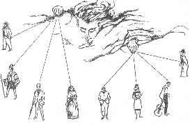
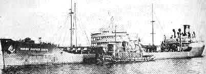
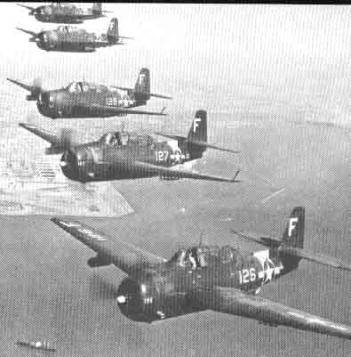
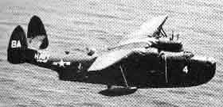

From T.LOBSANG RAMPA's book:"Chapters of life " In this book he writes about cosmic cycles, the "overself" and more of some short "stories" on themes - partly discussed in earlier books - more about the process of dying - the earlier encapsulated astral body leaving the physical - and he writes about the "Akasha - library" and suddenly disappearings to other dimesions - as in Bermuda. In this book he also give answers to some of the many letters he received. He daily in average got sixty!! - and tried to answer all of them. What a job only that! Rampa had the ability to fellow all incidents by reading/looking in the AKASHA - earths memorybank and so retelling the happenings in every detail. The one who SEES can here recognise the TRUTH. Research yourself!! (some words are translated to Norwegian and there MAY BE some wordmistakes here because this is scanned from the book. Some headlines are added) First some on the history of the JEWS and "THE SECOND COMING" (from page 22) ….in my book YOU - FOREVER - I refer to the Jews on page 109 of that book. I said, 'The Jewish people are a race who, in a previous existence, could not make progress at all.' This has produced some very friendly correspondence with Jewish readers throughout the world, and in particular some very erudite (lærd) ladies in Tel Aviv have asked me to give more details about Jews. This request has been supported by Jewish people in Argentina, Mexico, - Australia, and Germany. So, let us go a little more deeply into 'the Jewish question'. May I at this stage say that I have quite a number of friends who are Jewish and I have a sincere admiration for them, for they are an old, old race who have knowledge which is the envy (misunnelse) of those less gifted. First of all we might ask, 'what are Jews?' The general idea is a complete misconception, for 'Jew' in its present form is a misnomer. Actually, this word 'Jew' has not been in use for very long. - If you asked the average person who was the Father of the Jews, you would undoubtedly be told, 'why, Abraham of course!' But as history proves conclusively, this just is not so because in the true sense of the word Abraham was not a Jew! If you study your ancient history, either by going to a public library, or, more conveniently, by getting at the Akashic Record, you will find that Abraham was actually a native of the place called Ur of the Chaldees. Many places have two names nowadays, so if it will help you, Ur was also known as Ur Kasdim which was in Babylonia. That brings us to the interesting point that Abraham, far from being a Jew, was a Babylonian, and his actual name had no corresponding name or counterpart in Hebrew. The original name of Abraham was Abram. Abraham lived 2,300 years before the birth of Christ, at a time when the word 'Jew' was not even thought of, but about 1,800 years after Abraham had gone to his 'just reward' the word 'Jew' referred to people who lived in the Kingdom of Juda, and that was in the South of Palestine. - Those of you who are sufficiently interested can look in your Bible, in Kings 11.1o.o. Here you will find words written 600 years before Christ, and the word for Jew in those days was Jahudi. Back to your Bible again, this time to Ester 11.5. Here you will find that Jew is mentioned for the first time, and remember, also, that the Book of Ester was not written until some 2,400 years after the death of Abraham, that is, in the first century A.D. So - we find that Jahudi is that which we now call 'Jew'. In each cycle there have been twelve 'Saviours' or 'Messiahs' or 'World Leaders'. So when we refer to 'The Second Coming' we are rather behind the times; we can refer to Abraham, Moses, Buddha, Christ, and many others, but the whole point is that in every cycle of world existence there has to be a World Leader of a different Zodiacal sign. There are twelve signs of the Zodiac, and a Leader comes first in one sign, then another, then another, until in all there have been twelve Leaders. On this particular cycle of Kali - we are now approaching the eleventh, and after - there will be one more before this actual Age ends and we are really into the Golden Age. Naturally, with each World Leader, there have to be those who can support Him - disciples, if you like, or assistants, or ministers, call them what you like. But there have to be these men who are born specially to be of service to the world. In 1941 the first of the disciples was born, and others have been born since. The actual 'Saviour' will be born early in 1985, and in the interim (midlertidig) the disciples will be preparing the Way. (Rampa wrote this may be in 1966 - the book I have is published in England in 1967. R.Ø.remark.) The 'Saviour' or 'World Leader' - whichever you prefer - will have very special education and training, and in the year 2005, when he is twenty years of age, he will do much to confound godless people who do not believe in Gods, Saviours, etc., etc. (As I see it - "THE SECOND COMING"- does not mean a special person coming - saying he/she is Christ. It is "every day" a lot of such persons appearing - all over the world, but the fewer belive such assertions. No - this idea mean a new wisdom coming, and I mean the main wisdom has been brought to earth through many incarnated masters of wisdom through the last ca. 100 years. And the main cosmic impulse was brought to earth through the books of the Danish - spiritual author - Martinus, as I see it. But of course, everyone must search and recognise or find the "TRUTH" themselves. It could be noticed that also the theosoph's belive in a "new coming." R.Ø.remark.) Again, there will be a case of transmigration ("walk-in"). If those of you who know the Bible well will study it with an open mind you will find that the body of Jesus was taken over by 'the Spint of God - the Christ'. In much the same way, the body of the new World Leader will be taken over by a very high Personage indeed, and during the few years after that, there will be remarkable events, and the world will be led along those essential steps which will prepare it for the start of a new cycle. For some 2,000 years the world will make progress by following the precepts of the church to be founded by the new Leader, but at the end of that 2,000 years - yet another Leader shall arise - the twelfth of the cycle, completing the destiny of the Zodiac traversal. Conditions shall improve, and so, gently, - in the due course of time, people shall be led into a new Age where - they have different abilities from those now existing. There shall be clairvoyance and telepathy as there was before the so - called, miscalled, Tower of Babel, in which through abuse of special powers mankind lost their telepathic abilities for the time being. The whole story is given in the Bible, but it is in the form of a story. Actually, Man was able to communicate with fellow Man and with the animals, too, but through treachery (forrederi) to the animal world, mankind was deprived of telepathic communication and so there was the utter con - fusion of people trying to converse in what were local dialects, and which in time became the languages of the world. This world can now be likened to a train. The train has been going through various stages of scenery, it has been traversing pleasant sunlit lands which can correspond to stage 1, lands in which there was beautiful scenery and amiable fellow passengers. But then we come to stage 2, when the passengers all changed (incarnated as a group from the astral. R.Ø.remark.) , and this new lot were not so friendly, nor was the journey so pleasant because there was an uneven track with many clattering switchpoints, and the journey continued through depressingly gloomy terrain where the smoke of various factories belched vile chemicals into the atmosphere. Here the passengers were quarrelling and almost coming to blows, but worse was to come. At the third stage the passengers changed again and a lot of bandits got aboard, bandits who tried to rob other passengers, there was much stabbing, much sadistic action. The train, too, rocked along the edge of narrow gorges (dal/slukt) where landslides made travel precarious. All the time there was discordant (disharmonisk) noise and the continual quarrelling of the unhappy passengers. Again the train stopped and took on fresh passengers. This time conditions were even worse, the new passengers were almost wrecking their train, damaging the fittings, torturing, swindling, and engaging in all those activities, which the decent person finds abominable. (avskylig). The train went through increasingly difficult land, with badly laid rails, with many detours (omveier) and obstructions. At last there came a long and gloomy tunnel; the train plunged in and there appeared to be no lights anywhere in the train. The passengers were in darkness, like the people of the world itself, leaderless. The gloom became gloomier, and the atmosphere more dismal, until the train was pitching and tossing in absolute darkness, with a darkness that comes in a passage through the heart of a mountain. But our train is now in its darkest phase, it cannot get darker, therefore it must get lighter. As the train goes rocketing along it will get lighter and lighter, and eventually, as a New Age approaches, the train will burst forth from the mountainside, and below the passengers will see a fair and pleasant land with sparkling waters, herds of cattle grazing peacefully. The sun will be shining, and as the train goes on and on, ever changing passengers, they will find that conditions become better and better, where men respect the rights of others, where there is no longer terrorism, sadism, and torture. But much has to be done at the present time because before the Golden Age shall come there will be much more hardship and suffering on this world. Prediction is dealt with in another chapter of this book, but possibly it would not be amiss to say something here. According to the age-old art of astrology many sad events are going to take place on this Earth. Round about the year 1981 (this book was written in the mid 60ths ) there will be a very substantial and unexpected increase in the world's heat, with a reduction in rainfall and a drying up of crops, and fruit and other plants will wither up before they can be gathered. This great heatwave could easily be the result of an atom bomb dropped by the Chinese; the Chinese are making haste to develop a super bomb, and the present~day Chinese are like mad dogs, without thought for the rest of the world, because the rest of the world keeps them in virtual seclusion and they do not know what is happening elsewhere, and it is a sad fact that one always fears the person one does not know. Thus, the Chinese, in their xenophobic state of mind, are ready to lash out at that which they do not understand. One also has to bear in mind that it was bad enough when only the United States had the atom bomb, but now the Russians, the French, the Chinese, and perhaps others have this device. Conditions have reached a most precarious pass. Much preliminary work has to be done before the advent of the New Leader. Certain people have to be given hints of what is happening, when, and how. But certain other people have to be excluded from getting much knowledge. In addition to the disciples who are now born and who are still but children, there are those much older people with special knowledge who have to write about such things so that the knowledge will be disseminated (spredd), and who will thus 'pave the way'. These older people will not, of course, be upon the Earth at the time of the New Coming, but like those who are to come after, these forerunners will have done their task by taking upon themselves the hatred and the suspicions which always come to the innovator. People fear that which they do not understand, and so if it is said that a person has changed bodies with another, then he is automatically the subject of much persecution. But it is necessary that there be incidents of changing bodies to bring it into the public consciousness so that when the New Leader comes people will be able to accept the truth of transmigration of souls and the changing of bodies. Thus, while those who are undergoing the scorn and ridicule and active persecution of an ill - informed Press at present, they will know in the fullness of time that their suffering and misery has been justified. Often people will say, 'Oh, but if these people have such great powers why do they live in poverty? If they were truly what they say they are, they would have all the money they wanted.' This is utterly ridiculous (latterlig), because a person who comes to this Earth under different conditions, is something like a splinter in the body of the world, and if you have a splinter in your thumb - you agitate, and fidget, and you mess about until eventually you get that splinter dislodged, and you spare no liking for that splinter! In the same way, people who come to this world, and change bodies, and try to prepare a way for another, they too are like a splinter, the world finds them strange, people may be uncomfortable in the presence of such a being. Rather than blame their own lack of development, they always try to put the blame On the other person - 'Oh, he is queer, he makes me have such an uncanny feeling when he touches me.' So the old world goes rolling along full of trouble, but the darkest hour is before the dawn, and when things are at their blackest, there is the happy thought that any change can be for the better. And this world and the peoples of this world, after their blackest hour, will go on and on into the light when mankind shall be tolerant of mankind, and when the little people of the animal world shall be understood instead of misunderstood, feared, and tormented as they are at present. So, beginning with the year 2000, the world shall have pleasures, a Golden Age shall dawn. (Now - that we have approached that timemark - we see that the changes surely will take longer time to come - but the process goes on - faster and faster….R.Ø.remark.) CRAPTER TWO also begins with some stories - related to the matter later discussed. MANY MANSIONS (about the overself/groupself - and the feeling that "I have experienced this before..") Alone he was, alone in the old rambling house in the heart of the Moor. Far off at the end of the long, cultivated garden, a noisy brook went tumbling over the rocks and hissing across the stony stretches. On a warm day he was wont to stand by that babbling brook, or perch on one of the large rocks overhanging the tumultuous torrent (strømmer). Farther along there was the little wooden bridge with the shaky handrail by which he crossed on his way to the small hamlet for his mail and shopping. It had been pleasant here, he and his wife. Together they had tried to make a home, tried to keep 'body and soul together' while he painted and waited for recognition. But, as usual, the Press had not understood - nor tried to understand - his art, and so the critics had damned his work with faint praise; recognition was as far off as ever. And now he was alone in the old, old house, his mind and mood in a turmoil matched by the gale outside. Across the moorland heather the gale screeched in unbridled fury, lashing the yellow gorse, making it bow to the mighty wind. The distant sea was a boiling white mass of foam, with mighty waves breaking in thunder on the great granite shore, dragging back the pebbles - with a nerve - jarring scream. - A lone gull soared backwards overhead, blowing helplessly inland, powerless in the grip of the storm. The old house shook and shuddered to the ceaseless pounding of the elements. Flecks of cloud, driven low, whipped by the windows like ghosts seeking entry. A sudden metallic clatter and rumble, and a sheet of corrugated metal went spinning across the garden, to strike the bridge and shear through the old timbers. For a time the broken ends vibrated like an overtaxed violin string, then, one after the other, they shuddered and tumbled into the brook. Inside the house, oblivious of the turmoil, the man paced back and forth, back and forth. Seeing again and again, the moment when he had returned from the hamlet (grend) and found his wife gone. Re - reading the bitter note in which she told him that he was a failure - and she was going elsewhere. Grimly - as a sudden thought struck him - he strode to the battered old desk and wrenched open the centre drawer. Rooting in the back, he dragged out the cigar box in which he kept the rent and living money. Even before he opened it he knew that it was empty, the money, his ONLY money, gone. Groping his way to a chair he sat down and buried his head in his hands. 'Before!' he whispered. 'Before, this has happened to me before!' Lifting his head he stared unseeingly through the window against which torrential rain was beating in an unceasing stream, forcing its way through a loose - fitting window and collecting in a spreading pool on the carpet. 'I've lived through all this before!' he whispered. 'Have I gone Insane? How could I have known about this?' High up among the eaves the wind shrieked in derision and gave 'the old house an extra shake and judder. Against the ancient stone hedge the little moorland ponies huddled head to wind in abject misery, trying to get even slight shelter for stinging eyes. Away in the hall the telephone rang and rang, jarring him from his lethargy. Slowly he made his way to the jangling instrument, which ceased its c'langing even as he stretched out - his hand to lift it. 'The same, the same,' he murmured to the uncaring walls. 'IT HAS ALL HAPPENED BEFORE !' And Rampa also takes another story as a preparation of the theme coming.. ….the old Professor plodded wearily across the quadrangle on his way to the Lecture Hall. The years had been hard ones indeed. Born in very humble circumstances he had been the 'bright boy' who had slaved and earned that he could put himself through college. It had been almost a lifetime of clawing his way up against the opposition of those who resented his humble origin. Now in the evening of his life the weight Of Time was showing in his white hair, lined face, and feeble step. As he stumbled slowly along, oblivious of the greetings of undergraduates, he pondered on many obscure facets of his speciality, Ancient History. Completely the model of the Absent - minded Professor, he fumbled for the door - knob of a door already open, and not finding it, turned away, muttering, 'Dear dear! Most strange, 'MOST strange - there used to be a door here. I must be in the wrong building.' An understanding student - one who had profited from the old man's brilliant Lectures, took his arm and gently turned him round. 'Here, sir,' he said. 'I have opened the door for you. In here.' Gratefully the Professor turned and mumbled his thanks. Entering the Lecture Hall he became a man transformed; HERE was his life, here he expounded upon Ancient History. Moving like a man rejuvenated, he crossed to the rostrum and smiled benignly upon the assembled undergraduates. They smiled respectfully at him, for even though they did at times make fun of his forgetfulness, yet they still had a genuine liking for the Lecturer who was so willing to help them to the full extent of his power. Remembering his own struggles, he took pleasure in HELPING the student in difficulties, instead of flunking him as was so often the case with other Professors. Glancing about him to see that his class was complete, and all were ready, he said, 'We are going to continue with our discussion about one of the great enigmas of History, the Sumerian civilisation. Here was a mighty civilisation which seems to have appeared in a most mysterious manner and disappeared in an equally mysterious manner. We have tantalising fragments, but no clear picture. We know, for example, that three thousand and five hundred years B.C. the Sumerians were preparing beautifully written manuscripts. We have fragments of them. Always fragments, and no more. We know also that the Sumerians had a musical system, which differed from any other system of musical, notation throughout the old or new worlds. There has been discovered a clay tablet which by scientific methods indicates an age of some three thousand years. The tablet has engraved upon it musical symbols which lead us to suppose that it was a hymn, but it has defied musical interpretation.' The old man paused, his eyes opened wide as if seeing something beyond the normal vision of Man. For a minute he stood thus, gazing into the Infinite, then - with a strangled groan, he dropped to the floor. Stunned amazement held the class motioniess for a moment, then two students rushed to his side, while another hurried out in search of medical assistance. A hushed assembly stood respectfully aside as two stretcher - bearers carefully lifted the unconscious man, placed him upon the opened stretcher, and bore him away to the waiting ambulance. The Head who had been called, appeared full of bustle and dismissed the class for the afternoon. Away in the cool hospital room the old Professor, now regained consciousness, muttered to his doctor, 'Strange! Strange! I had the distinct impression that I had lived through this incident before, that I KNEW the origin of the Sumerians. I must have been working too hard. But I KNEW the answer, and now it has faded. Strange, strange!' A new short story… The middle - aged man squirmed uncomfortably upon the hard wooden bench, crossing first one leg then the other. From time to time he lifted half - frightened eyes to gaze about him. From the - end of the room came the harsh, impersonal voice of the nurse grating out her monotonous orders: 'Garland, you are to see Dr. Northey. Here are your cards. Take them in THAT door, and wait until the Doctor speaks to you. Rogers, you go to Therapy, they want to do some test. Here are your cards. Go down the corridor THERE.' The voice, continued like the voice of a bored Announcer quoting the Fat - Stock prices. The middle - 'aged man shuddered at the rows and rows of people before him. Patients unaccompanied, new patients with relatives with them, and some with burly Attendants waiting near by. The hours dragged on. Here and there a man or woman screamed in the grip of some mental fantasy. Nearer, a man shouted, 'I gotta, and when you gotta you gotta.' Jumping up, he rushed across the room, scattering people right and left, elbowing aside a clutching Attendant, tripping a clerk, before diving headlong through an open window. Throughout the en - suing commotion the nurse's voice droned on imperturbably. 'Outside, the dull red - brick buildings shimmered in the increasing heat. The glass of the many windows threw back the sun's reflection, and showed the thousands of bars across the windows. Scores of blank - eyed men stooped and shuffled as they grubbed among the gravel of the paths in search of weeds. Attendants loitered alertly in any available shade as they supervised the toiling men. Farther along, where the grassy slopes met the main drive, lines of dowdy women bent to the task of picking litter and stones from the grass before the mowers could do their work. Beneath a spreading tree a gaunt woman stood in the pose of utter majesty as she scornfully surveyed the two watchful women Attendants who were poised in anxious expectancy. At the main gates two Attendants stopped cars entering that the occupants might be directed. An inmate, appearing casual, tried to slip out behind an Attendant's back, but was soon stopped 'Now, AIf - the Attendant admonished. 'Back in you go - none of your tricks, I'm busy.' Beyond the high stone walls and heavily barred gates pedestrians peered in curiously, getting a thrill out of a forbidden peep at Life Inside the Walls. In Admittance the middle - aged man stood up uncertainly as his name was eventually called. Rising to his feet he walked to the Nurse at the desk and said, 'It is all a mistake, I - 'Yes, yes, I know, you are as sane as can be,' interrupted the Nurse. 'They all say the same.' Sighing, she picked up a card and some papers and signalled to a waiting Attendant.' 'You had better take this one to Dr. Hollis,' she said, when the Attendant appeared. 'He says it is all a mistake and he is sane. Mind he doesn't get away.' 'Come on, fella,' said the Attendant, grasping the middle - aged man by the arm and leading him through a small door. Together they trudged along a corridor lined with doors. From behind some came sighs, from others screams, and from yet another a queer bubbling sound which made the Attendant jump to an alarm and energetically summon assistance to one whose life was bubbling away through a cut throat. The middle - aged man shivered and seemed to shrink. 'Scared, eh?' asked the - Attendant. 'You ain't seen nuthing yet. You WILL!' At last they stopped before a door, the Attendant knocked and a distant voice called, 'Come in.' Pushing the middle - aged man before him, he entered and placed the card and papers on the desk. 'Another one for you, Doctor,' said the Attendant as he turned and withdrew. The Doctor slowly reached out a languid hand and picked up the papers and compared them with the card. Then, without paying the slightest attention to the middle - aged man he seethed back in his swivel chair and began to read. Not until he had read every word, and made notes, did he look up and utter a terse, 'SIT!' 'Now!' said the Doctor as his patient sat shakily before him. 'what's all this about. - How d'ye think you can be in two places at once? Tell me all about it.' He sat back with an air of bored resignation and lit a cigarette. 'Well, Doctor,' said the middle - aged man, 'for some time I have had the strangest feeling that another part of me is living in some other part of the world. I feel as if I were one of identical twins sometimes almost completely in rapport with the other.' The Doctor grunted and knocked the ash off his cigarette. 'Any brothers or sisters?' he asked. 'The report says none, but it could be wrong.' 'No, Doctor, no brothers, no sisters, and no one with whom I am sufficiently friendly to account for this feeling. It is exactly as if I sometimes get in touch with another "me" somewhere else, someone who also is aware of - this feeling.' The Doctor stubbed out his cigarette and said, 'How frequently do you have these remarkable occurrences? Can you predict their onset?' 'No, sir,' the middle - aged man replied. 'I may be doing something quite ordinary, then I will experience a tingling in the navel, and after that I feel as if I were two telephone lines which have been crossed and both parties are receiving their own telephone calls as well as those of the other.' 'Hmm!' mused the Doctor. 'Does it inconvenience you in anyway?' 'Yes, Doctor, it does,' the middle - aged man replied. 'Sometimes I speak out loud and say the DARNDEST things!' The Doctor sighed as he remarked, 'So I see from this report. Well, we shall have to commit you to an Observation Ward until we can get the matter straightened out, you seem to be living in two worlds at the same time.' At the Doctor's signal the Attendant entered the room. 'Take - him to Observation B3 please. I will see him later in the day.' The Attendant motioned to the middle - aged man, and together they turned and went out of the Doctor's office. The Doctor sat motionless for a moment, then pushed his glasses up to his forehead and energetically scratched the back of his neck. Lighting a fresh cigarette, he leaned back in his swivel chair and put his feet on the desk. 'It seems we have a lot of people in nowadays,' he said to himself, 'who believe they are living twin existences. I suppose next we shall have people saying they are living in parallel world or something.' The 'burrr, burrr' of his telephone jerked him back to the present, and slipping his feet off the desk he reached out for the phone and got ready for the next patient…. There are such things as parallel worlds because everything must have its counterpart in a reversed state, just the same as you cannot have a battery which is only positive or only negative; there must be positive and negative. But that is a matter to be discussed in our next chapter, now we have parallel worlds. Unfortunately, 'scientists' who have been afraid of losing face or something, or sinking into matters beyond - their depth, - have confused the issue because they will not face up to the thought of having genuine research. Yet in India the Adepts of years gone by referred to their 'Linga Sharira', which means the part of the body which is in a different dimension - beyond the three dimensions of this world - and so cannot be perceived normally by a person existing in this three - dimensional world. We have to remember that upon this world we are - confined to three dimensions, for this is wholly a three - dimensional world and to the average person who has not studied anything about metaphysics the fourth dimension is something to laugh about or to read about in some remarkable science fiction. Not merely is there a fourth dimension, but beyond the world of the fourth there are the fifth, the sixth, the seventh, the eighth, and the ninth. In the ninth, for example, one attains realisation and is able to comprehend the nature of things, one is able to comprehend the origin of Life, the origin of the Soul, how things started and what part mankind plays in the evolution of the Cosmos. In the ninth dimension, also, Man - still a puppet of the Overself - is able to converse face to face with his Overself. One of the greatest difficulties is the unfortunate fact that 'scientists' have set up all sorts of extraordinary and arbitrary rules and if one dares to contradict anything that these 'scientists' say, then one is really ostracised. An example of that may be found in the way in which the medical profession was completely crippled for hundreds of years because of the works of Aristotle, it was considered to be a great crime to do any investigation into the human body because Aristotle had taught all there was to know - ever. So, until the medical profession could escape from the dead hand of Aristotle, they could do no dissections and no post - mortems, and they could do no research. Certain astronomers had much the same difficulty when they taught that earth was not the centre of creation because some early Wonderful Man had taught that the Sun revolved round the Earth, and that everything existed for the comfort of mankind! But now we have to get on with our dimensions. Here on this Earth we deal with that which is commonly known as three dimensions. We see a thing and we feel a thing, and it appears solid and real to us. But suppose we had to deal with an extra dimension, them first thing would be - well, what is this extra dimension? Possibly we could not quite comprehend it. What could be a fourth dimension? Worse, what would be a fifth? And then go on - up to the ninth, or even beyond the ninth. The best thing is to consider first an ordinary tape - recorder because most people have access to a taperecorder or have seen one. We have a tape - recorder running at a very slow, slow speed, less than an inch a second. At such a slow speed one could have a tape message last for an hour. But supposing we made that tape play back at, for example, a foot a second; then the speech would be quite unintelligible to us, the message upon the tape would not have altered in any way, the words would be the same, but in effect we would have moved our speech to another dimension and so we could not comprehend the speech. Before we could comprehend that which was upon the tape we should have to play the tape at the same speed as that employed in recording it. Incidentally, marine biologists have used tape - recordings and have discovered that fish of all 'kinds talk. There is, in fact, a special phonograph record giving sounds of the sea in which there are the sounds of the fish talking to each other, and even lobsters and crabs communicating. If you find this hard to believe, remember that dolphins have had their speech recorded on tape; dolphins speak many, many times faster than humans, so the speech was recorded on tape and was quite unintelligible to humans, but the tape was slowed to a 'dimension' (speed) acceptable to human ears. Now the scientists are trying to decipher the tapes, and at the time of writing this it has been - stated that these scientists are able to compile a vocabulary so that eventually they may be able to communicate in extenso with dolphins. But - back to our parallel worlds. Many, many years ago, when I had escaped from the Russians and was making my slow and painful way across Europe to eventually reach a free country, I chanced to stop in war - torn Berlin then being desecrated by the - savage Russians. I was walking about wondering what to do next, wondering how to pass the time until nightfall when I should hope to be able to get a lift upon my way towards the French border. I walked along looking at the still - smouldering ruins where allied bombing had reduced most of Berlin to shattered rubble. In a little cleared spot beneath twisted steel girders now turning red with rust, I saw a ramshackle stage set up surrounded by those bomb - racked buildings. There was scenery of a sort upon the stage, scenery made from bits of material salvaged from the wreckage. They had some poles, and from the poles were stretched pieces of sacking so as to obscure as much as possible a view of the stage from those who had not paid to enter. I was interested and looking farther I saw there were two old men, one was standing before a curtain taking money. He was tattered and unkempt, but there was a certain air of - something - majesty, I suppose, about him. I forget now how much money I paid to enter, not much because none of us had much money in war - torn Berlin, but as I paid he put the money in his pocket and courteously motioned me through the tattered and bedraggled curtain. - As I went beyond the curtain I saw some planks bridging rubble, and on those planks people were sitting. I took my seat, too, then a hand came through the curtain and waved. An old, old man, thin, bent with the weight of years, shuffled to the centre of the stage and made a little address in German telling us what we were going to see. Then turning away he went behind the backdrop. For a moment we saw him with two sticks in his hand and from those two sticks depended a number of puppets, inanimate lumps of wood, roughly carved to represent a human shape, dressed up in gaudy rags, with painted features and lumps of - hair stuck on top. They were crude, they really were crude, and I thought that I had wasted money which I could ill afford, but - I was tired of walking, tired of just ambling about attempting to evade Russian and - German police patrols, so I kept to my hard seat and thought that as I had wasted the money I would waste some time as well. The old man shuffled out of sight at the back of his little ramshackle stage. Somehow lie had rigged up lighting of some kind, these were now dimmed and on this very makeshift stage appeared figures. I stared. I stared hard and rubbed my eyes, for these weren't puppets, these were living creatures, gone completely was the crudity of hacked wood daubed over with colour, topped with horsehair and swaddled with bits of rag salvaged from bombed ruins. Here were living people, people each with a mind of his own, people intent on the task at hand, people who moved of their own volition. There was no music, of course, and no sound, no sound that is except for the asthmatical wheezing of the old, old man now hidden in the back. But sound was not necessary, sound of any kind would have been superfluous, the puppets were Life, every movement, every gesture was expressive, speech was unnecessary, for these motions were in the universal language of picture, pantomime. There seemed to be an aura around these puppets, these puppets who had now become people, they seemed to take on the identity and the personality itself of that which they were at the moment representing. No matter how much I peered I could not see the strings going from the heads, these - were indeed artfully hidden against the background. Before me scenes of life were being enacted with absolute fidelity to the human counterparts. I lost myself in following the actions and the motives, we watched human drama and our pulses raced in sympathy with the underdog. This was excitement, this was real, but at last the show came to an end and I roused myself as if from a trance. I knew that a real genius was controlling those puppets, a master of masters, and then the old man came out from behind his stage and bowed. He was shaking with fatigue, his face was white with the strain and covered with a thin sheen of perspiration. He was indeed an artist, he was indeed a master, and we saw not a tattered, battered old man, clad in rags, but the genius who manipulated those crude puppets and brought them to life. As I turned away I thought of the things I had learned in Tibet, I thought of my beloved Guide the Lama Mingyar Dondup, and how he had shown me that Man is just a puppet of his Overself. 'I thought also how this puppet show had been - a wonderful lesson on parallel worlds. Man is ninetenths subconscious and one-tenth conscious. You have probably read quite a lot about it because the whole science of psychology is devoted to the various facets and idiosyncrasies of Man's subconscious. Remembering that Man is so little 'conscious' does it not occur to you what a shocking waste of time it is for a powerful, powerful Overself, gifted with all manner of abilities and talents, pulsing with the power of a more vibrant world and of a different way of life, who comes to this world laden with troubles and obstacles, and then to function at, at most, one-tenth of its ability? Supposing you had a motor - car, oh, let us say an eight - cylinder car because there do not seem to be any ten - cylinder cars to make the allusion more exact - let us say we have an eight - cylinder car, then, just for the purpose of this iliustration. We have this eight - cylinder car, but we find that it is working on one cylinder alone, seven cylinders are not in any way contributing towards the function of the car, they are in fact holding it back even more because of the inertia. The performance is deplorable. But think of it in terms of human existence; mankind is like a ten - cylinder car only one cylinder of which works, the other nine are 'subconscious'. Wasteful, isn't it? The Overself of a human - or any other creature either, for that matter - does not waste energy; the Overself of a human has a number of tasks which must be accomplished. supposing we have an evolved Overself who is anxious to progress to other planes of existence, one who is anxious to go up and up and up to different dimensions. In that case the Overself might devote one-tenth of its ability to dealing with the body on Earth, and the rest of its abilities might go to dealing with bodies on other planets, or other planes of existence. Or it might even be without puppet bodies on other planes of existence and be moving in what one might term, pure spirit, in - stead. But if the Overself is not that farevolved or has a different scheme of operations, it might do things in a different way. Supposing our Overself is more or less of a beginner, then you can say that it is the same - as a student in secondary school. The student has to attend a number of classes instead of having to learn just one subject, often this means that the student has to walk to different classes or to different centres, and that really does waste a lot of time and energy. The Overself is in a far more satisfactory position. It is the puppet master. Upon this world which we call Earth there is a puppet which is the Earth body, and which functions with one tenth of the Overselfs attention. Upon a parallel world in another dimension the Overself could have another puppet, or perhaps two, or three, or more puppets, and it would then be able to manipulate these between various tasks. To go back to our student, one might say that this is like a student who can remain aloof in his private room and send his deputies to the different classrooms so that he can gain all the experience required through these different sources and 'connect them up' later. Let us assume that the Overself has to rush things somewhat in order to catch up with the cycle of evolution. Supposing the Overself has been a bit slow or am bit lazy, and has had various setbacks, and this Overself does not want to be left in the same class or state after the others have passed on, so he has to take, in - effect a cramming course the same as a child or older student takes extra lessons in order that he may keep up with others who are more advanced, and so remain in close touch with them. The Overself may have a person living one life in Australia, and may have yet another person doing something else in Africa. Perhaps there will be another one in South America, or Canada, or England; there may be more than three, there may be five or six or seven. These people might never meet on Earth and they would still be very much in affinity with each other, they may have telepathic rapport without in any way understanding why, but then occasionally they would meet in the astral just as travelling salesmen sometimes meet in the sales manager's office. Insert picture here "ramchap1.jpg"  the overself (or can we also call it groupsoul - as the theosophy learns? R.Ø.) which through impulses controls its "puppets" - as in a puppet-theatre. But remember that this overself is YOURSELF - exactly your feeling of the "I - IDENTITY". But because we are only 1/10 consciousness in our normal state - we can not overview the identity of our real SELF. The poor wretched Overself with seven or eight or nine puppets would really have to get a move on to manipulate them all at once and avoid 'crossing the wires' This is one explanation of some curious dreams because frequently when two compatible puppets are asleep their Silver Cords might touch, and would produce an effect similar to those crossed telephone lines wherein you hear pieces of others' conversations but, sadly, sadly, and to one's immense regret, we miss all the most interesting bits. But what is the purpose of all this, you might ask. Well, that's easy to answer: By having a number of puppets the Overself can have vast experience and can live ten lives in just one lifetime. The Overself can experience riches and poverty the same time, and so weigh them in the balance of experience. One puppet in one country could be a beggar making a miserable living, hardly existing, in fact, while in some other country the next puppet could be a prince gaining experience on how to handle men and how to shape a nation's policy. The beggar would be gaining experience of misery and suffering so that when his lifetime of experience was blended to that of the prince - puppet, the Overself would know of the seamier side of me, and would know that there are at least two sides to every question. In the normal course of events people would perhaps come as a prince and then wait for another life to come as a beggar, or the other way about, but when they are rushed for time, when any given cycle of evolution is nearing its end as is the present case, then heroic methods have to be adopted in order that those who - are slower may yet keep up with the rest. We are now entering the Aquarian Age, an Age wherein much will happen to Man and Man's spirituallty will increase - it is about time that it did, by the way. Man's psychic ability also will increase. Many people now living on the Earth will not be reborn to the Earth but will go on to different stages of evolution. Many of those who have not learned in this or in this cycle of existence will be sent back like naughty schoolboys to start again in the next cycle. If a boy is left behind by his class at school he is often dissatisfied and disgruntled(sur) that he is left behind, and he tends m be difficult with newcomers to that class, he tends to overplay his part and to show that he knows more, is better, bigger, and all that sort of thing, and the newcomers to the class almost always dislike the boy who is left over from the previous class. It is the same in the classroom of life, a person who has been rejected as not sufficiently evolved to go on to m next stage of existence has to come back and do that cycle mover again. His subconscious memory contained in the nine-tenth of the subconscious resents it, and he tends to get ahead in one particular way. Many people after leaving this Earth will go on to a different form of existence, ever higher, for Man always must climb higher and higher, as indeed must all creatures, and the spirit of Man being gregarious by nature, delights to be in company with loved ones. Thus it is that an Overself will make really determined efforts and will use many puppets in order that it may keep up with its fellows. Let us accept, then, that a parallel world is a world in a different dimension, a world which is much like Earth, but yet is in a different dimension. If you find that difficult to comprehend, supposing you could go to the other side of the world instantly, in the twinkling of an eye. Now decide for yourself - are you living in the past? That is, have you gone back to yesterday, or have you travelled to the future? According to your calendar you will find that when you cross various datelines you travel either backwards or forwards as much as a complete day. So it is theoretically possible to move a day into the future according to your basic time, or to a 4ay in the past. Having agreed mat that is so, you should be able to agree that there are various dimensions which cannot be easily explained, - which nevertheless do exist, as do parallel worlds. It is always amazing that people can readily believe that the heart can pump ten tons of blood in an hour, or that there are 60,000 miles of capillary tubing in the body, and yet a simple thing like parallel worlds causes them to raise their eyebrows in disbelief and thereby make an astonishing amount of muscles go to work. Our subconscious is usually quite difficult to reach, difficult to plumb. If we could easily reach our subconscious we could at all times find out what other puppets of ours were doing in other worlds, or in other parts of this world, and that would lead to very considerable confusion, alarm, and despondency. For example, think - today you have done certain things, but if you could get into your subconscious and find yourself living the life of another puppet of yours who had done the same thing last week or who intended to do it next week, it would lead to quite amazing confusion. This is one of the many reasons why it is so very difficult to tap into the subconscious. At times things happen whereby there is an involuntary breakthrough between the conscious and the subconscious. It is a serious matter indeed, so serious that it is usually dealt with in a mental home. It leads to all sorts of psychotic conditions because the poor wretched sufferer is unable to determine which is the body in which he is supposed to reside. Have you heard of the book The Three Faces of Eve? A woman was possessed by three different entities. The whole thing has been written about by quite a number of reputable doctors and specialists who presumably know what they are writing about. Have you read the story of Bridle Murphy? That is a similar case. Again a person was possessed by another entity, or in other words, there was a breakthrough in the subconscious from one puppet to another. Then we have the matter of Joan of Arc; Joan believed that she was a great leader, that she had messages from higher sources. Joan of Arc, a very simple, uneducated country girl, turned into a warrior and a leader of warriors because the Silver Cords between two puppets became tangled and Joan received impulses designed for a man in a different body. For a time she acted as that man, as that leader of men, as that great warrior, - and then when the lines were untangled her powers failed and she was once again the simple country girl who had to pay a penalty for temporary, and mistaken, fame; she was burned to death. In the case of the victim of The Three Faces of Eve a multiple breakthrough, or breakdown, occurred and the poor woman was placed in unwilling contact with other puppets controlled by the same Overself. These other puppets were m a similar condition, they also suffered this breakthrough and as a result there was complete chaos. It is the same when you get two or three puppets and you are careless or inexperienced or let your attention wander, the - cords become entangled, you pull a string which should control Puppet A, but because of the tangle you might cause Puppet B to kick and Puppet C to - nod its head. In the same way, when you get a breakthrough between the conscious and the subconscious, an uncontrolled breakthrough, that is, then you get interference from and with others who are being controlled by the same Overself. Bridle Murphy? Yes, that also is true, that was a break - through into the subconscious and again a tangling of cords and a transference of impressions. Joan of Arc, as we have seen, was a simple country girl without education of any kind. She spent long periods alone in contemplation, and in one such period she quite accidentally broke through to the subconscious. Probably she did a special breathing exercise without even knowing it, because all this can be done deliberately and under full control. Anyway, she broke through to the subconscious, crossed strings with another puppet, and really got into a mess. She had all the impulses of a warrior, and she became a warrior, she wore armour and rode a horse. But what happened to the poor fellow who was in - tended to become a leader, did he develop womanly traits? Well, if we speculate on that we can lead ourselves to all sorts of unfortunate conclusions. But - Joan of Arc became a leader of men, a warrior hearing voices from the sky. OF COURSE SHE DID! She was picking up impressions from the Silver Cord, which, after all, is only our puppet string. Think of that, our puppet string. We have a Silver Cord that is also mentioned in the Bible where, as you may remember, in the twelfth chapter of Ecclesiastes it is said, 'Or ever the silver cord be loosed or the golden bowl be broken or the pitcher be broken at the fountain or the wheel broken at the cistern.' People write about time and relativity, parallel worlds and all that, they use such big words that even they do not understand what they mean. But possibly you have got the general idea from this chapter. Remember, all this is true, all this is absolute fact, and one day in the not very distant future - science will break down a few barriers and a few prejudices, and will realise the truth of - parallel worlds. In the next - 3.chapter - he goes on with a very interesting thing - worlds of the opposite polarity: For centuries past the Adepts of the far, far East have known that there was an opposite world to this, the world which in the far, far East is referred to as 'the Black Twin'. For years Western scientists have scoffed at such things, believing in their ignorance that only things discovered by Western scientists could exist, but now, fairly recently, a man has been awarded the Nobel Prize for discovering various things connected with the world of anti - matter. In 1927 a British physicist discovered that there was such a - thing as a world of anti - matter, but he doubted his own work, apparently not having sufficient faith in his own ability. But then an American physicist by the name of Carl Anderson photographed cosmic rays passing through a special chamber. He found traces of an electron different from other electrons, he found, in fact, that there were antielectrons, and for his discovery, which was anticipated by the British in 1927, Anderson received the Nobel Prize. Possibly if the British physicist had had sufficient confidence in his work he would have had the prize instead. It is now clear even to scientists - it has been clear to people of the East centuries before that a hydrogen atom and its antimatter counterpart could make an explosion which by companson would make the standard atom bomb as ineffectual as a damp squib. But let us look into this matter a little more. All life, all existence - is motion, flow, rise and fall, wax and wane. Even sight consists of motion, for the rods and cones of the eye merely respond to vibrations (motion) from the article which we say we have seen. So there is nothing whatever that is stationary. Take a mountain - it looks a solid structure, but by different sight the mountain is merely a mass of molecules dancing up and down, circling around each other like midges on a summer night. On a larger scale we could compare it to the cosmos, because in the cosmos there are planets, worlds, meteors, all circling around, all in constant motion, nothing is still, one is not even still in death! In the same way that a battery must have a negative pole and a positive pole before any flow of energy can occur, so do humans, and anything else that exists, have negative and positive components. Nothing has ever existed which is all positive or all negative, because unless there is a difference there cannot be' any flow of energy from one to the other, and thus life or existence would be impossible. Most people are unaware of the world of anti - matter just as the negative or positive poles of a battery would not be aware of the existence of other poles. The positive terminal of a battery could have a direct pull towards the negative, or vice versa, but it is highly improbable that either pole could discuss the existence of the other. There is the world of matter, but equal and opposite, there is a world of anti - matter, just as there is God and there is anti - God. Unless we have an anti - God there is no way of comparing the goodness of God, and unless we have a God there is no way of comparing the badness of anti - God. We who live upon this, which actually is the negative world or pole, are at present controlled by anti - God, the Devil, or Satan, or what we term 'the power of evil'. But soon the cycle of existence will change and we shall be controlled by God, more under His beneficent influence. We are of an alternating current system which changes from positive to negative, and negative to positive, just as our counterpart changes from negative to positive and positive to negative. All life is flow, movement, vibration, oscillation, change. All existence is flow and change. If we examine the alternating current system we can see that each half wave consists of a negative cycle becoming half-positive, and a half positive cycle becoming half negative. But then they go on and instead of becoming half-negative the first becomes wholly negative, and the second wholly positive. In our ordinary household current, in England for example, the current changes its polarity fifty times a second, from negative to positive and positive to negative. In other parts of the world, such as Canada and the United States, the frequency of change is sixty times a second. We upon this form of existence known as the world, the solar system, and the universe, have a cycle system of our own. Here we travel along the stream of time just as electrons travel along the electric stream, we travel along our conception of time until we reach - or our Overself reaches - some much greater existence. If you will refer to Wisdom of the Ancients written by me, you will find that one different time cycle is 72,000 years. But everyone and everything on Earth has a counterpart of the opposite polarity on another Earth, in another galaxy, in another system of time altogether. Obviously that system cannot be close to us or there would be such a tremendous explosion that the whole Earth, and many other worlds as well, would be destroyed. It is now thought that the great earth - shaking explosion which occurred on June 30th, 1908, in the wastes of Siberia was caused by a piece of anti - matter much smaller than a football which had somehow got into our atmosphere. It travelled along at truly tremendous speed, and as it slammed into the Earth this piece of anti - matter, much smaller than a football, exploded with a noise which was heard more than 500miles away. People 40 miles away were thrown off their feet with the blast and shock. So if a larger piece of anti - matter came there would be no longer an Earth; in just the same way as a spark can weld contacts together and so cause a short and complete failure of an electric system, so would a larger piece of anti - matter have caused complete failure to us. We, then, in our present cycle and on our present world, are of the negative cycle. Thus we have frustration, bitterness, where the predominant force is evil. Take heart from the fact that this particular cycle is coming to a close, and in the years to come a fresh cycle will start in which conditions will become more and more positive, where we shall no longer be under the domination of anti - God, where no longer shall there be wars, but where all shall be good; for just as now we have wars against each other, in the cycle to come the only wars shall be against poverty arid illness, and against evil itself. We will find that we have what can be termed 'Heaven on Earth', and Overselves everywhere will be sending their puppets to what then shall be the positive world as well as to the negative worli Suppose you consider Alice in Wonderland: think of Alice going through the mirror into a world where everything was reversed. Supposing that you could suddenly pass through the veil separating the negative and positive, supposing that here on this world you were wondering how you could pay your bills, wondering how you were going to afford to keep going, and wondering why your neighbour disliked you so much. Then, unexpectedly you were pushed through the veil. You would find you had no bills, people were kind, you had time to help other people instead of thinking about yourself all the time. It is going to come, inevitably, it always comes, and each time there is a reversal of cycle we learn a little more. It is an interesting thought that if we could catch a lump of anti - matter about the size of a pea, and we could shield it somehow from the Earth's influence, we could harness it to a vast spaceship, and then by exposing just a little to the Earth's influence that particle, no larger than a pea, would propel the spaceship upwards beyond this world, and out into deep, deep space. There would then be no need for rockets or other forms of propulsion, because that small piece of anti - matter, under proper control, would provide complete anti - gravity matter. Again, there cannot be good without evil because no force would exist. You cannot have a magnet, which is all positive or all negative because no force would exist. The magnet would not exist either! Let us imagine that the world is just a form of magnet with magnetic fields, which radiate from the Arctic remark the Antarctic, but connected to us by some bridge that we cannot seemis another world of the opposite polarity. Then we would have the two poles of, for instance, a horseshoe magnet. Many scientists are wondering if anti - matter means that every single thing is duplicated on this other world. They wonder, for instance; if there are anti - people, anti - cats, and antimogsm Scientists do not know what these people are like because scientists are people of little or no imagination, they have to have a thing in their hands so that they can dissect it or weigli it. It takes an occultist to give information on this particular subject, because the competent occultist can leave the body and get out of the body, and out of the Earth as well, and once out of the Earth he can see what this other world is like - as I - have done so very, very frequently. Anti - people are merely people whose etheric direction is different from that of people on this, the world of Earth. They may, purely by way of illustration, have a yellowish and blue shell to the aura instead of a blue and yellow shell as here. If you find it difficult to visualise the world of anti - matter, consider in photography - we have a negative and we have a positive, and if we shine a light through the negative under sensitised paper and dip the stuff in various chemicals we get a dark patch where there was a light patch on the negative, and a light patch where there was a dark patch on the negative; There are certain unknown flying objects - let us call them "flying saucers" - which come to this Earth actually from the world of anti - matter. They cannot come too close or they would explode, but they are exploring just the same as we send a rocket to the Moon, or to Mars, or to Venus. (Comment - there are some very serious contact-reports from ufo-contacts from civilisations claiming to be from a universe of the opposite. And I believe they are able to change their actual polarity when they re-materialises the ship and themselves - after the transference on the higher planes or the non-physical form - back to our "normal" state of reality. You can read more of this on the link - UFO-CONTACT FROM KOLDAS. Also some pictures and figures describing the process. R.Ø.remark.) People complain that if there was anything in this flying saucer business the people aboard would land or would make contact with people upon this Earth. The whole truth of the matter is that they cannot, because if they touch down there is an explosion and no longer a flying saucer. If you will consider various reports you will remember that there have been incidents when some unknown flying object, which was very dearly seen on radar, suddenly exploded most violently as it came within 1,000 feet or so of the surface of this world, exploded so violently that no trace could be found. The same thing could happen if we could send a rocket to the world of anti - matter. We should annoy the inhabitants considerably by perhaps blowing a city right off their map! There are other aspects of this world of anti - matter which are exceedingly interesting to those who have studied the matter thoroughly. For example, there are certain locations - fortunately but few - on this world of ours where people can 'slip through' into another dimension, or into the world of antimatter. People move to such a location, which oscillates slightly, and if they are unlucky they are transferred completely from our Earth. This is not imagination, but is a matter, which has, been proved time and time again. THE DISAPPEARINGS IN BERMUDA AND ELSE… Far away beyond the Shetland Islands in a very cold sea there is a mysterious island called Ultima Thule, the Last Land. Most mysterious happenings have occurred in the vicinity of that island and actually upon it. There is, for instance, a British Admiralty report of many years ago wherein it is stated that a party of British seamen landed on Ultima Thule, and there most peculiar things happened to them, and people appeared, people who were quite different from British sailors. Eventually the British sailors returned to their ship, a British battleship, by the way, considerably shaken by their unnerving experiences. At Ultima Thule whole ships' crews have disappeared never to be seen again. There is off the American coast a place, which has been known as the Triangle of Death. It is an area in the Atlantic Ocean where ships, and even fast flying aircraft, have disappeared. Would you like to check on some of this? Here is a start: On February 2nd, 1963, a tanker called Marine Sulphur Queen left Beaumont in the State of Texas. This ship was bound for Norfolk in Virginia. The ship left on February 2nd, and was in routine radio communication with land radio stations until February 4th, when she was stated to be near a certain area of land in the Gulf of Mexico. Then no more was heard of the ship. (Insert picture ramchap3.jpg.)  pict.of the ship nearly 150m long - disappeared in perfect weather - and 39 people on board. No trace.. from 1840 -1973 it is known of 19 inexplicable ships disappearing - some in sunshine and calm sea…..On February 6th the ship was presumed lost. Planes took off to patrol the area, coastguard cutters steamed criss - cross patterns, and all ships in the area were asked to report any unusual wreckage. And so the search continued until February 14th, without any trace whatever of anything from the tanker. Not only ships have been lost; in August 1963 two large four - engine tanker planes left an Air Force base South of Miami. The eleven men aboard the planes were to be engaged in ordinary refuelling operations - just an ordinary matter of training in refuelling. During the flight the planes radioed their position as 800 miles North of Miami and 300 miles West of Bermuda, but that was the last heard from them, they reported their position and vanished to be seen no more. These were new planes with highly trained crews. There was no fault in the planes at all, they had just radioed their position, and then they vanished. Imagine the search which followed; aircraft went out and literally combed the area, some flying high so that they could see over the widest possible part of the sea, others flying low in the hope of spotting something of the two planes. Ships moved across and took up the search, but nothing whatever was ever found, no planes, no wreckage, no bodies - nothing. NOTHING! Throughout years there have been reports of the mysterious disappearance of ships - ships lost without trace, lost without even a matchstick of wreckage to show that they existed. But never have there been the facilities for quick search by fast radar - equipped aircraft as at present, and no matter how one searches, no matter the means one employs, there is still no trace of what happened. There is an area in the Atlantic on the Bermuda/Florida coastline where many ships have disappeared, and many aircraft, too, have disappeared. This is not a lonely area because the whole of the coastline is patrolled by coastguards, by the Navy, and by the Air Force. The list of disappearances goes back to the first part of recorded history. Many years ago I became acquainted with a most mysterious area in the Pacific, South of Japan. Here there was a region known as the Devil's Sea where a ship, usually a junk, could sail along its peaceful way and then completely vanish before the startled eyes of people in other junks near by. On one occasion a line of fishing junks were sailing out over the Devil's Sea, the leading junk was perhaps a mile away from the next. It sailed on, and suddenly vanished without the slightest trace. The helmsman in the second junk was so paralysed with fright that he had no time or thought to alter course, and his junk sailed on over the course of the other and nothing happened to it. All the crews later reported a curious shimmer in the air above them, and a sensation which they said was oppressive and heavy like that often occurring before a very strong tornado. Here is something that the sceptical among you could check; on December 5th, 1945, five torpedombombers took off from the naval station at Fort Lauderdale in the State of Florida. It was a peaceful, sunny day, without clouds, the water was placid, there were no storms, nothing at all to give one thought that a great mystery was about to occur. (Insert picture ramchap2.jpg.)  These five bombers were going out on an absolutely routine flight during which time they should be within visual sight of the American coastline or some of the Caribbean Islands. At no time, considering the height at which they would fly, should they be out of sight of land. Every bomber had been carefully checked and every fuel tank was completely full. Every engine was at its best condition, as was certified by the pilots who had to sign examination sheets before taking off. Further, every plane had a self - inflating life - raft, and each man wore his own life - jacket, life - jackets which would keep a man afloat for days. The crew numbered fourteen, and every man had more than a year's experience of flying. Presumably they all thought they were going for an ordinary pleasurable flight up into the blue sky, watching the jewels of islands which were the Caribbean Islands, and watching the long, long coastline of Florida. Perhaps, too, some of them hoped to get another look down at the Everglades. But they took off carrying out their ordinary routine patrol, they were going to fly East for 100 miles and North for 40 miles, after which they would head back to the air station which they mould reach two hours after takeoff. Sometime after take - off - about an hour and a half - a message was received at the Fort Lauderdale station, and it was a strange message indeed, it was a message of emergency. The leader of the flight was agitated, even frightened; he said they all seemed to be off course, and he said also that they could not see land. This was such a strange occurrence that he found it necessary to repeat it. 'Repeat, we cannot see land.' As is usual in such a case the radio operator on duty at the air station sent a message to the flight of planes asking what was their position. The reply completely shattered the composure of the men in the airport control towers. The reply, "we are not sure of our position, we do not know where we are.' Yet they were flying in ideal conditions, every man was completely experienced and their aircraft were excellent. But then a further message was received, a highly alarmed voice came through the speakers, 'We don't know which way is West,' said the voice. 'Everything is wrong, everything is strange, we cannot be sure of any direction, even the sea doesn't look as it should.' Can you imagine an experienced man accompanied by thirteen other men being able tm say the compass did not indicate correctly, they did not know where they were, they could not see land, and even the sea looked different? And yet, also, the sun which was shining on the air station was invisible to the fourteen men flying in a cloudless sky, they could not see the sun, and the sea looked different. At about 4.30 p.m. of that same day another flight leader spoke by radio, and said that he did not know where they were. It continued, 'It looks as if we are….' And then the message ended, no further contact was ever made, no trace was ever found of these - fourteen men, nor of the planes in which they flew, no wreckage, nothing. Within minutes one of the American Navy's largest flying - boats, with complete equipment for survival and rescue, roared off the water carrying a crew of thirteen men.  The flying - boat, nearly 80 feet long and with a wing span of 125 feet, was built to withstand the roughest landings at sea. One would have called such a flying - boat invincible and invulnerable. (Insert picture ramchap4.jpg.) the flying - boat also had the possibility to land on the ocean - but it totally disappeared. From 1946 - 1967 there was 21planes - totally lost in this area - an remember some of them had 4 separate engines - and some flew so that they could overview each other…During the flying - boat's journey out to the imagined position of the torpedo - bombers it sent out routine reports, but after twenty minutes all radio contact stopped and nothing whatever was ever heard again about the torpedo - bombers norm about the huge, specially equipped, specialJy manned flying - boat which had gone to their rescue. The coastguard, the Navy, - the Air Force - everyone - went out in a hurried search for wreckage, for men floating in life - jackets or in self - inflating life - boats, but nothing was ever found. - An aircraft carrier moved into the area and thirty planes took off at first light to search the whole area. The R.A.F. who happened to be nearby sent every one of their available planes into the air to search. But, again, never has there been the slightest piece of wreckage, and it is clear that all these planes just disappeared. Disappeared? Yes, they went through a 'hole in time' into the world of anti - matter, just as throughout the ages ships and men and women, and animals too, have vanished without trace. These incidents are not just isolated incidents that happened recently, they have happened throughout history and if one digs deep enough one can find various highly interesting accounts of sudden disappearances. There is, for example, a well - documented case of a boy who went out of his father's farmhouse one evening. He was going to get water from the well, there was snow upon the ground, just a few inches of it, and the boy was anxious to get back to the fire, so he started out with a pail in each hand. His parents and some visiting friends sat by the side of the fire and waited for him because they wanted the water with which to make tea. After a time the mother got restless and wondered whatever was keeping the boy. But knowing how boys dawdle she was not alarmed until almost an hour had passed. Then some strange feeling came over them and they took lanterns and went out in search of the boy, thinking that perhaps he had fallen into the well. With their lanterns before them shedding light upon the snow they could follow his footsteps halfway across the field. Then, the father in the lead stopped with such horrified astonishment that those following bumped into him. He moved aside and pointed dumbly. The others looked in the snow, and there they found clear imprints of the boy's footsteps and then no imprints any more. The boy had vanished as if he had suddenly been drawn straight up into the air. This is fact; the footsteps went in a straight line, and then they were no more. The boy has not been seen since. There was another case of a man in full daylight. He went out into a field watched by his wife and the local sheriff (in the United States). He was going to get something for the sheriff from the field, and in view of these people he just vanished into thin air and was never seen again! Do you have access to Reynolds' News? If you do you might like to consult the issue of August 14th, 1938. If you turn over those by now yellowed pages you will find the tale of an R.A.F. flying - boat that suddenly disappeared in an immense column of water and smoke while flying just a few feet over the surface of the sea off Felixstowe, England. There was no collision, no impact, but the plane just vanished and no of it have been found. Here is another one: In the year 1952 in the month of March Wing Commander Baldwin of the R.A.F. was flying with a patrol of planes along the Korean coast. He and his companions were all flying new jet planes. He flew into a cloud, his companions did not. They returned to base eventuality but Commander Baldwin did not, there was no trace of him and no trace of his plane, and none of his companions could say what happened to him. There are many, many such cases. For example, in 1947 - an American Super - Fortress just disappeared without any trace and without any wreckage. It was flying in that triangle near Bermuda. This Super - Fortress, a very large plane, just vanished, and although a really intensive search was mounted no trace was found. Do you remember the case of the British South American Airways plane, Star Tiger? The year was 1948, the month was January, well, almost February because it was January 3odl. But this great plane, a four - engine affair, radioed the airport at Kindleyfleld, Bermuda, that it was approximately 400 miles from the island. The radio operator stated that the - Weather was excellent and the plane was performing exactly as it should. The radio operator added that they expected to arrive on scheduk. Well, they did not; the six members of the crew and two dozen - passengers disappeared, and again, in spite of a most thorough search, nothing was ever found. About fifty planes of various types flew low over the area, but - nothing was found. In London there was an investigation based on all available evidence. These things are thoroughly investigated because of the insurance at Lloyds of London, but the only verdict the investigators could bring in was 'Lost, cause unknown'. Do you want another? December 1948 -a big airliner going from San Juan airport towards Florida. There were more than thirty passengers, and when the radio operator got in touch with his station he said that everything was going well and them passengers were all singing. At 4.15 a.m. the radio operator contacted Miami control tower stating that they were 50 miles out and were in sight of the field. He asked for landing instructions. The plane vanished, the passengers, everything vanished without trace, and no trace has ever been found. Again there was no wreckage. The investigators confirmed that the Captain and crew were highly experienced and yet - less than 50 miles from their destination a great plane vanished without the slightest trace. Just one more - we have to mention this one because it is a sister of the Star Tiger, but this later one was called the Ariel. Again it got in touch with Bermuda and then passed on en route to Kingston, Jamaica. But at 8.25 there was a message, which stated that the plane was 175 miles from Bermuda. The operator confirmed that everything was well and he was changing to the radio station at Kingston, but that was the last heard, the plane vanished without trace. The United States Navy was in the vicinity of Bermuda, carrying out manoeuvres. The United States Navy and the Air Force, too, had had enough of these mysteries, so they bent every possible effort to solving the mystery. Two immense aircraft carriers put every one of their planes in the air, in addition there were light cruisers and destroyers, together with mine - sweepers and all manners of pinnaces. Yet although every square foot of water was covered, no trace was found, nothing at all. The explanation is that there is a 'split in time' through which infrequently people go from one world to another. If you imagine two large footballs rotating close together, and each fobtball has a small split in it, you can see that if for some reason the two split - areas came into close proximity an unhappy little flea on one football could just jump straight into the split of the other football. Perhaps there is a similar state of affairs between this world and the opposite world. If you find that difficult to understand, remember this; here we are in a three - dimensional world. We imagine that in our little box - like rooms we are quite safe and nothing can touch us, but supposing a four - dimensional person looked down at us, then possibly for him a ceiling or a wall would not exist and so he could reach down and pick us up. It might be a good idea if we have a chapter devoted to dimensions, the fourth dimension, for example. What do you think? Shall we do it? The fourth dimension is a very useful thing if we understand it properly.
Just a very little then from CHAPTER FOUR "MANY DIMENSIONS TOO!" IT seems rather appropriate to deal with the fourth dimension in the fourth chapter because when we leave this Earth - we all go into the fourth dimension! Let us add an interesting point here; people who attend seances are often upset at the garbled messages they receive from those who have 'passed over'. They do not understand that the person who has left this Earth for another plane of existence is what we might term thousands of light years in the future. You will find an interesting parallel later in this chapter when we deal with the Hindu king and his daughter, but first what is a one - dimensional world? We cannot understand what four dimensions are unless we understand what one is. Suppose we have a piece of paper and a pencil; let us draw on the paper a straight line, and let us imagine that all the carbon from the pencil represents people so that in effect the straight line is a whole universe. There will be only two points for the people, one is straight ahead and the other is straight behind, they will be able to move backwards or forwards, and in no other way at all. Supposing that you could make a change in that line, then the one - dimensional people would think that a miracle had occurred, or if they saw the point of your pencil just lightly pressing on the paper they would think that a flying saucer had suddenly appeared. You, as a three - dimensional creature, will have temporarily entered a one - dimensional world to rest the point of your pencil on the paper, and the one - dimensional being who saw that pencil point will be sure that a most unusual happening has occurred. Being one - dimensional he would not be able to see you but only that point of the pencil in contact with the paper. Having some idea of what a one - dimensional world is; let us have a look at a two dimensional world. This will be a fiat plane and the people who live upon such a world will necessarily be flat geometrical figures. The world in which they exist will be to the them much the same as our world except that if you draw pencillines aruond them - they will become aware or these as great walls preventing them from going beyond those encompassing lines - and they will probably decide that the lines they encounter must exist somewhere else - they will think of the third dimension i much the same way as we think of the 4 th dimension. In much the same way as we sometimes has difficulty comprehending the 4. Dim - so will these 2dim people have the greatest difficulty in comprehending that 3.dim - which to us so commonplace… |